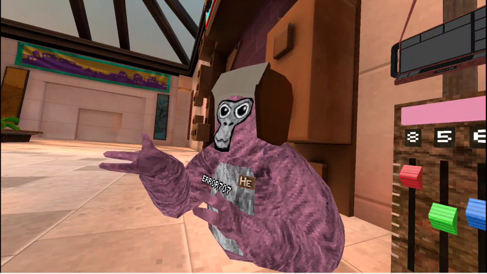

throughout its history. These updates usually add new decorations, cosmetics, items, and changes to the maps. One of the most popular types of updates is the Halloween update. During Halloween, the maps are decorated with spooky objects and the game gets a darker atmosphere. Players can also get Halloween-themed cosmetics and items.
Gorilla Tag has also had other seasonal events and updates throughout the year. Some updates introduce new maps or change existing ones, while others add new cosmetics and special features.
The game has changed a lot since its early beta versions. The original game was much simpler, with fewer maps, cosmetics, and features. As the player community grew, the developers continued adding new content and improving the game. These regular updates helped Gorilla Tag stay active and gave players new things to discover throughout the year.